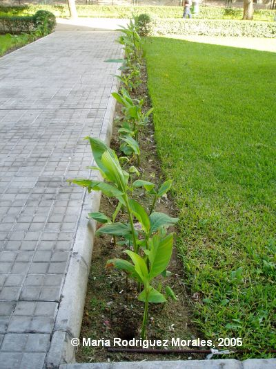

| Stenotaphrum secundatum
(Walter)
Kunze, Revis. Gen. Pl.
2: 794 (1891) |
Gramíneas |
| Grama americana, grama catalana,
grama basta |
Hierba estolonífera |
|
Hierba perenne,
estolonífera, con tallos rastreros.
Hojas simples, dísticas, sentadas, con
vaina de
margen libre; lígula
constituida por un anillo de pelos; lámina de unos 3 x
0,5 cm,
entera, linear.
Inflorescencia en espiga laxa, casi
unilateral con eje aplanado, con espiguillas de 4-5 mm, sentadas, y más
o menos
encajados en el eje de la espiga, con dos flores.
Flores apétalas,
poco vistosas, la inferior de cada
espiguilla estéril o
masculina, la superior hermafrodita; glumas muy
desiguales, la inferior
de
1-2 mm, la superior de 4-5 mm; lemas de 4-5 mm,
lanceoladas, agudas y
sin arista. 3 Estambres. Ovario súpero, con dos estigmas
plumosos.
Fruto seco, de tipo cariópside. |
 A la derecha, césped de Stenotaphrum |
| [Fotos
de detalles] |
Observaciones.-
Posee a veces nectarios extraflorales. Es una de las especies más utilizadas para formar céspedes por ser muy resistente al pisoteo; actualmente está introducida por el hombre en todo el globo. |
| Área de Origen.- Pantropical: zonas tropicales y subtropicales del viejo y del nuevo mundo. | |
| Uso en el campus.- Como principal
componente del césped. |
Localización.- |
|
(1)
J. Devesa (1987) Las
Gramíneas de Extremadura. Universidad de
Extremadura,
Badajoz. |
|
| Lidia
Jiménez Duarte (2003) & Carlos Romero Zarco (2005) |
|